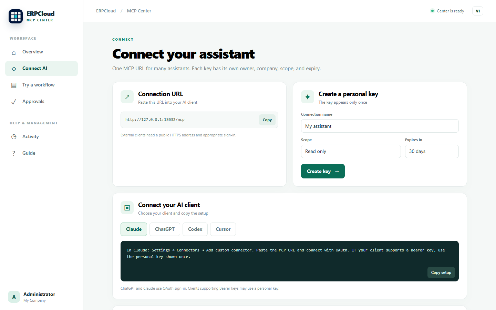

ERPCloud · ODOO 20 COMMUNITY
Connect once. See sales follow-ups with source links. Review quotation previews before a draft is created.
MCP Center opens from its own root menu. Create a personal connection, copy the MCP URL, follow instructions for your AI client, and review connection activity in a clean desktop and mobile interface. Vietnamese and English interface copy is included.


AI proposals appear in a dedicated review page. An approver sees the exact customer, product lines and total before a draft quotation is created. This screenshot is from a clean QA database with sample business records.

Read-only by default. Named, expiring and revocable keys. OAuth with PKCE for supported remote clients. Per-key request limits and activity trace IDs. No arbitrary Odoo model access and no automatic order confirmation or sending.

erpcloud_mcp_center into your addons path, refresh Apps and install it.Dependencies: Odoo 20 Community base, web, sale. No ERPCloud private addon. No sample customer/product data is installed. The initial release focuses on sales quotations.
Support: info@erpcloud.vn · License: LGPL-3.0